-
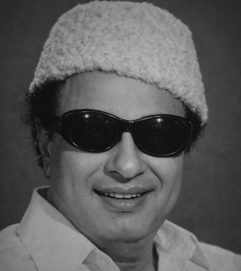
I am your son; you can use me in any way you like.
M. G. Ramachandran
Former Chief Minister of Tamilnadu
-
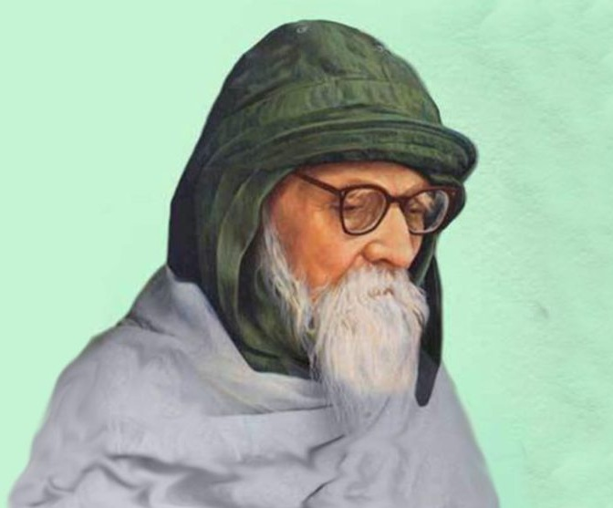
Swami Sri Ramakrishna's dogma is a fine harmonious blend of the "Advaitha doctrine" of Sri Shankar, the spiritual ethics of Sri Madhya and Sri Ramanuja, and the tenets of devotion and dedication of Lord Christ. Apart from these, I find this Ashram to be an embodiment of Mahatmaji's Karma Yoga added to the tranquility of Sri Ramakrishna.
Acharya Vinoba Bahve
-
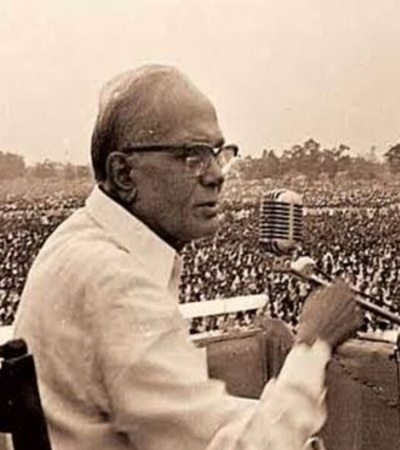
This is beautiful setting for a school. It reminds me of what one has heard of the Gurukulas of ancient times. I am sure the children will take back from here an outlook of life which will make them servants of Man and God. Has this system been adhered to in all our educational institutions, our nation would have much prospered and had already the total dawn of Sarvodaya.
Jayaprakash Narayan
Indian Politician, Theorist and Independence Activist
-
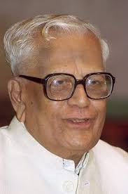
I see cleanliness and briskness here. Swamiji's tireless work reflects this. I wish this institution to grow in all its prosperity.
R. Venkataraman
Former President of India
-
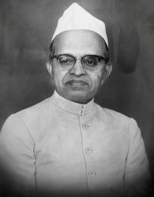
We are very glad to note that the inmates are given good food and clothing and also basic training and also training in carpentry, tailoring etc., The Gurukulam is run on sacred lines. Wish the institution all further progress and success.
A.J. John
Former Governor of Madras
-
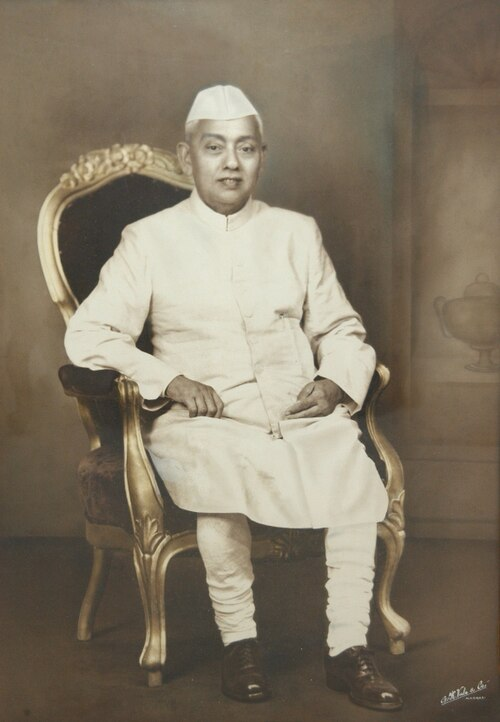
I find everything is done in the institution not only to give the boys necessary training for their future life but also a spiritual background under the direction of the Swamiji.
Bishnuram Medhi
Former Governor of Madras
-
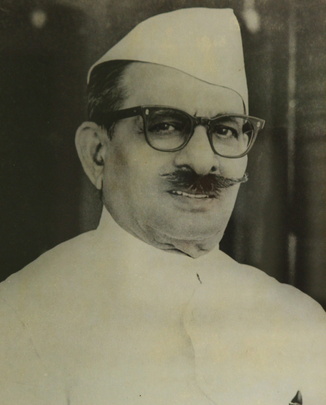
Some 300 or more orphan children, who were destitutes before they become the happy inmates of the Ashram, are taught not only academic subjects but given training in different trades. They are given moral and physical instruction also to make them good self-reliant citizens.
S.L. Silam
Former Lieutenant Governor of Puducherry
-
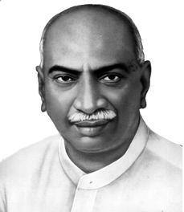
I would like to come and involve in this Ashram as and when I find time.
K. Kamaraj
Former Chief Minister of Tamilnadu
-
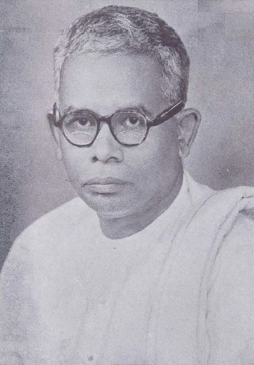
Children are brought up well. This is a sacred service not only to the children, but also to the society.
M. Bhaktavatsalam
Former Chief Minister of Tamilnadu
-
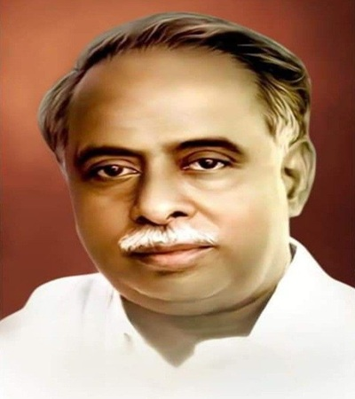
Inspite of my ever exacting and erratic political environment, the heart of my heart always tends towards the tranquility of such an Ashram.
C.N. Annadurai
Former Chief Minister of Tamilnadu
-
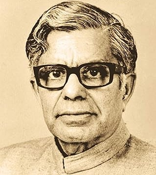
I am sure that support of good people will be available for this good work. I pray the God for the success of this Institution.
C. Subramaniam
Former Finance & Defence Minister of India
{kind=link}
{kind=link}
{kind=link}
{kind=link}
{kind=link}
{kind=link}
{kind=link}
{kind=link}
{kind=link}